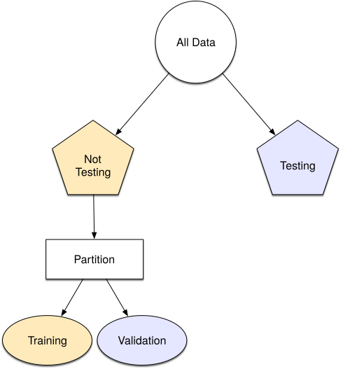
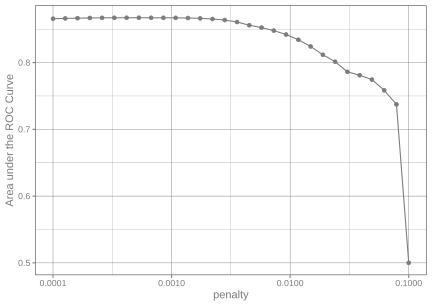
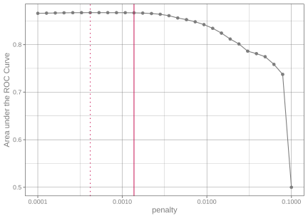
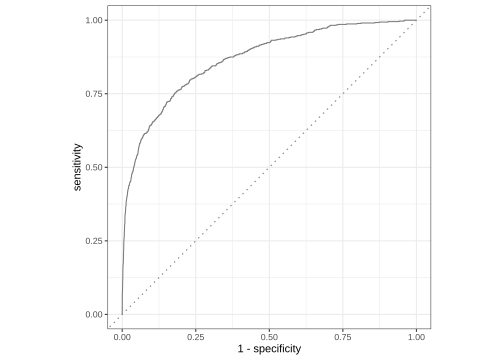
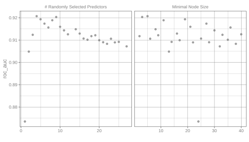
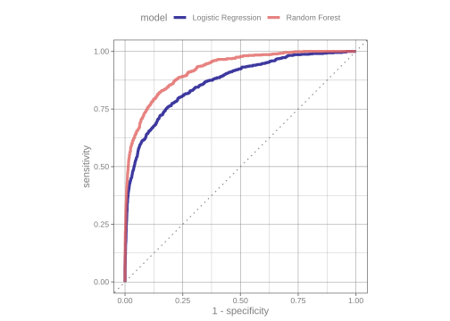
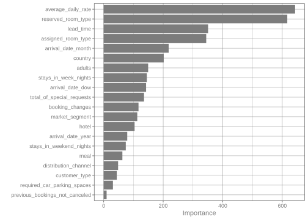
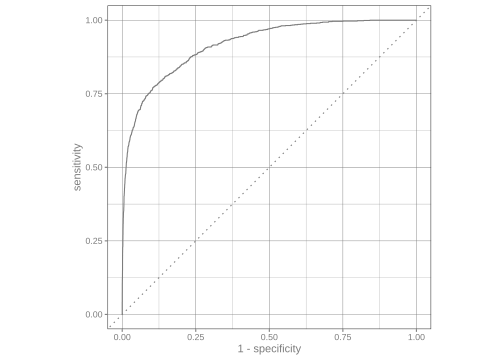

A predictive modeling case study
model fitting
tuning
parsnip
recipes
rsample
workflows
Develop, from beginning to end, a predictive model using best practices.
Introduction
Each of the four previous Get Started articles has focused on a single task related to modeling. Along the way, we also introduced core packages in the tidymodels ecosystem and some of the key functions you’ll need to start working with models. In this final case study, we will use all of the previous articles as a foundation to build a predictive model from beginning to end with data on hotel stays.
To use code in this article, you will need to install the following packages: glmnet, here, ranger, readr, scales, tidymodels, and vip.
The Hotel Bookings Data
Let’s use hotel bookings data from Antonio, Almeida, and Nunes (2019) to predict which hotel stays included children and/or babies, based on the other characteristics of the stays such as which hotel the guests stay at, how much they pay, etc. This was also a #TidyTuesday dataset with a data dictionary you may want to look over to learn more about the variables. We’ll use a slightly edited version of the dataset for this case study.
To start, let’s read our hotel data into R, which we’ll do by providing readr::read_csv() with a url where our CSV data is located (“https://tidymodels.org/start/case-study/hotels.csv”):
In the original paper, the authors caution that the distribution of many variables (such as number of adults/children, room type, meals bought, country of origin of the guests, and so forth) is different for hotel stays that were canceled versus not canceled. This makes sense because much of that information is gathered (or gathered again more accurately) when guests check in for their stay, so canceled bookings are likely to have more missing data than non-canceled bookings, and/or to have different characteristics when data is not missing. Given this, it is unlikely that we can reliably detect meaningful differences between guests who cancel their bookings and those who do not with this dataset. To build our models here, we have already filtered the data to include only the bookings that did not cancel, so we’ll be analyzing hotel stays only.
glimpse(hotels)
#> Rows: 50,000
#> Columns: 23
#> $ hotel <fct> City_Hotel, City_Hotel, Resort_Hotel, R…
#> $ lead_time <dbl> 217, 2, 95, 143, 136, 67, 47, 56, 80, 6…
#> $ stays_in_weekend_nights <dbl> 1, 0, 2, 2, 1, 2, 0, 0, 0, 2, 1, 0, 1, …
#> $ stays_in_week_nights <dbl> 3, 1, 5, 6, 4, 2, 2, 3, 4, 2, 2, 1, 2, …
#> $ adults <dbl> 2, 2, 2, 2, 2, 2, 2, 0, 2, 2, 2, 1, 2, …
#> $ children <fct> none, none, none, none, none, none, chi…
#> $ meal <fct> BB, BB, BB, HB, HB, SC, BB, BB, BB, BB,…
#> $ country <fct> DEU, PRT, GBR, ROU, PRT, GBR, ESP, ESP,…
#> $ market_segment <fct> Offline_TA/TO, Direct, Online_TA, Onlin…
#> $ distribution_channel <fct> TA/TO, Direct, TA/TO, TA/TO, Direct, TA…
#> $ is_repeated_guest <dbl> 0, 0, 0, 0, 0, 0, 0, 0, 0, 0, 0, 0, 0, …
#> $ previous_cancellations <dbl> 0, 0, 0, 0, 0, 0, 0, 0, 0, 0, 0, 0, 0, …
#> $ previous_bookings_not_canceled <dbl> 0, 0, 0, 0, 0, 0, 0, 0, 0, 0, 0, 0, 0, …
#> $ reserved_room_type <fct> A, D, A, A, F, A, C, B, D, A, A, D, A, …
#> $ assigned_room_type <fct> A, K, A, A, F, A, C, A, D, A, D, D, A, …
#> $ booking_changes <dbl> 0, 0, 2, 0, 0, 0, 0, 0, 0, 0, 0, 0, 0, …
#> $ deposit_type <fct> No_Deposit, No_Deposit, No_Deposit, No_…
#> $ days_in_waiting_list <dbl> 0, 0, 0, 0, 0, 0, 0, 0, 0, 0, 0, 0, 0, …
#> $ customer_type <fct> Transient-Party, Transient, Transient, …
#> $ average_daily_rate <dbl> 80.75, 170.00, 8.00, 81.00, 157.60, 49.…
#> $ required_car_parking_spaces <fct> none, none, none, none, none, none, non…
#> $ total_of_special_requests <dbl> 1, 3, 2, 1, 4, 1, 1, 1, 1, 1, 0, 1, 0, …
#> $ arrival_date <date> 2016-09-01, 2017-08-25, 2016-11-19, 20…We will build a model to predict which actual hotel stays included children and/or babies, and which did not. Our outcome variable children is a factor variable with two levels:
We can see that children were only in 8.1% of the reservations. This type of class imbalance can often wreak havoc on an analysis. While there are several methods for combating this issue using recipes (search for steps to upsample or downsample) or other more specialized packages like themis, the analyses shown below analyze the data as-is.
Data Splitting & Resampling
For a data splitting strategy, let’s reserve 25% of the stays to the test set. As in our Evaluate your model with resampling article, we know our outcome variable children is pretty imbalanced so we’ll use a stratified random sample:
set.seed(123)
splits <- initial_split(hotels, strata = children)
hotel_other <- training(splits)
hotel_test <- testing(splits)
# training set proportions by children
hotel_other %>%
count(children) %>%
mutate(prop = n/sum(n))
#> # A tibble: 2 × 3
#> children n prop
#> <fct> <int> <dbl>
#> 1 children 3027 0.0807
#> 2 none 34473 0.919
# test set proportions by children
hotel_test %>%
count(children) %>%
mutate(prop = n/sum(n))
#> # A tibble: 2 × 3
#> children n prop
#> <fct> <int> <dbl>
#> 1 children 1011 0.0809
#> 2 none 11489 0.919In our articles so far, we’ve relied on 10-fold cross-validation as the primary resampling method using rsample::vfold_cv(). This has created 10 different resamples of the training set (which we further split into analysis and assessment sets), producing 10 different performance metrics that we then aggregated.
For this case study, rather than using multiple iterations of resampling, let’s create a single resample called a validation set. In tidymodels, a validation set is treated as a single iteration of resampling. This will be a split from the 37,500 stays that were not used for testing, which we called hotel_other. This split creates two new datasets:
the set held out for the purpose of measuring performance, called the validation set, and
the remaining data used to fit the model, called the training set.

We’ll use the validation_split() function to allocate 20% of the hotel_other stays to the validation set and 30,000 stays to the training set. This means that our model performance metrics will be computed on a single set of 7,500 hotel stays. This is fairly large, so the amount of data should provide enough precision to be a reliable indicator for how well each model predicts the outcome with a single iteration of resampling.
set.seed(234)
val_set <- validation_split(hotel_other,
strata = children,
prop = 0.80)
#> Warning: `validation_split()` was deprecated in rsample 1.2.0.
#> ℹ Please use `initial_validation_split()` instead.
val_set
#> # Validation Set Split (0.8/0.2) using stratification
#> # A tibble: 1 × 2
#> splits id
#> <list> <chr>
#> 1 <split [30000/7500]> validationThis function, like initial_split(), has the same strata argument, which uses stratified sampling to create the resample. This means that we’ll have roughly the same proportions of hotel stays with and without children in our new validation and training sets, as compared to the original hotel_other proportions.
A first model: penalized logistic regression
Since our outcome variable children is categorical, logistic regression would be a good first model to start. Let’s use a model that can perform feature selection during training. The glmnet R package fits a generalized linear model via penalized maximum likelihood. This method of estimating the logistic regression slope parameters uses a penalty on the process so that less relevant predictors are driven towards a value of zero. One of the glmnet penalization methods, called the lasso method, can actually set the predictor slopes to zero if a large enough penalty is used.
Build the model
To specify a penalized logistic regression model that uses a feature selection penalty, let’s use the parsnip package with the glmnet engine:
lr_mod <-
logistic_reg(penalty = tune(), mixture = 1) %>%
set_engine("glmnet")We’ll set the penalty argument to tune() as a placeholder for now. This is a model hyperparameter that we will tune to find the best value for making predictions with our data. Setting mixture to a value of one means that the glmnet model will potentially remove irrelevant predictors and choose a simpler model.
Create the recipe
Let’s create a recipe to define the preprocessing steps we need to prepare our hotel stays data for this model. It might make sense to create a set of date-based predictors that reflect important components related to the arrival date. We have already introduced a number of useful recipe steps for creating features from dates:
step_date()creates predictors for the year, month, and day of the week.step_holiday()generates a set of indicator variables for specific holidays. Although we don’t know where these two hotels are located, we do know that the countries for origin for most stays are based in Europe.step_rm()removes variables; here we’ll use it to remove the original date variable since we no longer want it in the model.
Additionally, all categorical predictors (e.g., distribution_channel, hotel, …) should be converted to dummy variables, and all numeric predictors need to be centered and scaled.
step_dummy()converts characters or factors (i.e., nominal variables) into one or more numeric binary model terms for the levels of the original data.step_zv()removes indicator variables that only contain a single unique value (e.g. all zeros). This is important because, for penalized models, the predictors should be centered and scaled.step_normalize()centers and scales numeric variables.
Putting all these steps together into a recipe for a penalized logistic regression model, we have:
holidays <- c("AllSouls", "AshWednesday", "ChristmasEve", "Easter",
"ChristmasDay", "GoodFriday", "NewYearsDay", "PalmSunday")
lr_recipe <-
recipe(children ~ ., data = hotel_other) %>%
step_date(arrival_date) %>%
step_holiday(arrival_date, holidays = holidays) %>%
step_rm(arrival_date) %>%
step_dummy(all_nominal_predictors()) %>%
step_zv(all_predictors()) %>%
step_normalize(all_predictors())Create the workflow
As we introduced in Preprocess your data with recipes, let’s bundle the model and recipe into a single workflow() object to make management of the R objects easier:
lr_workflow <-
workflow() %>%
add_model(lr_mod) %>%
add_recipe(lr_recipe)Create the grid for tuning
Before we fit this model, we need to set up a grid of penalty values to tune. In our Tune model parameters article, we used dials::grid_regular() to create an expanded grid based on a combination of two hyperparameters. Since we have only one hyperparameter to tune here, we can set the grid up manually using a one-column tibble with 30 candidate values:
lr_reg_grid <- tibble(penalty = 10^seq(-4, -1, length.out = 30))
lr_reg_grid %>% top_n(-5) # lowest penalty values
#> Selecting by penalty
#> # A tibble: 5 × 1
#> penalty
#> <dbl>
#> 1 0.0001
#> 2 0.000127
#> 3 0.000161
#> 4 0.000204
#> 5 0.000259
lr_reg_grid %>% top_n(5) # highest penalty values
#> Selecting by penalty
#> # A tibble: 5 × 1
#> penalty
#> <dbl>
#> 1 0.0386
#> 2 0.0489
#> 3 0.0621
#> 4 0.0788
#> 5 0.1Train and tune the model
Let’s use tune::tune_grid() to train these 30 penalized logistic regression models. We’ll also save the validation set predictions (via the call to control_grid()) so that diagnostic information can be available after the model fit. The area under the ROC curve will be used to quantify how well the model performs across a continuum of event thresholds (recall that the event rate—the proportion of stays including children— is very low for these data).
lr_res <-
lr_workflow %>%
tune_grid(val_set,
grid = lr_reg_grid,
control = control_grid(save_pred = TRUE),
metrics = metric_set(roc_auc))It might be easier to visualize the validation set metrics by plotting the area under the ROC curve against the range of penalty values:
lr_plot <-
lr_res %>%
collect_metrics() %>%
ggplot(aes(x = penalty, y = mean)) +
geom_point() +
geom_line() +
ylab("Area under the ROC Curve") +
scale_x_log10(labels = scales::label_number())
lr_plot 
This plots shows us that model performance is generally better at the smaller penalty values. This suggests that the majority of the predictors are important to the model. We also see a steep drop in the area under the ROC curve towards the highest penalty values. This happens because a large enough penalty will remove all predictors from the model, and not surprisingly predictive accuracy plummets with no predictors in the model (recall that an ROC AUC value of 0.50 means that the model does no better than chance at predicting the correct class).
Our model performance seems to plateau at the smaller penalty values, so going by the roc_auc metric alone could lead us to multiple options for the “best” value for this hyperparameter:
top_models <-
lr_res %>%
show_best(metric = "roc_auc", n = 15) %>%
arrange(penalty)
top_models
#> # A tibble: 15 × 7
#> penalty .metric .estimator mean n std_err .config
#> <dbl> <chr> <chr> <dbl> <int> <dbl> <chr>
#> 1 0.000127 roc_auc binary 0.872 1 NA pre0_mod02_post0
#> 2 0.000161 roc_auc binary 0.872 1 NA pre0_mod03_post0
#> 3 0.000204 roc_auc binary 0.873 1 NA pre0_mod04_post0
#> 4 0.000259 roc_auc binary 0.873 1 NA pre0_mod05_post0
#> 5 0.000329 roc_auc binary 0.874 1 NA pre0_mod06_post0
#> 6 0.000418 roc_auc binary 0.874 1 NA pre0_mod07_post0
#> 7 0.000530 roc_auc binary 0.875 1 NA pre0_mod08_post0
#> 8 0.000672 roc_auc binary 0.875 1 NA pre0_mod09_post0
#> 9 0.000853 roc_auc binary 0.876 1 NA pre0_mod10_post0
#> 10 0.00108 roc_auc binary 0.876 1 NA pre0_mod11_post0
#> 11 0.00137 roc_auc binary 0.876 1 NA pre0_mod12_post0
#> 12 0.00174 roc_auc binary 0.876 1 NA pre0_mod13_post0
#> 13 0.00221 roc_auc binary 0.876 1 NA pre0_mod14_post0
#> 14 0.00281 roc_auc binary 0.875 1 NA pre0_mod15_post0
#> 15 0.00356 roc_auc binary 0.873 1 NA pre0_mod16_post0Every candidate model in this tibble likely includes more predictor variables than the model in the row below it. If we used select_best(), it would return candidate model 11 with a penalty value of 0.00137, shown with the dotted line below.

However, we may want to choose a penalty value further along the x-axis, closer to where we start to see the decline in model performance. For example, candidate model 12 with a penalty value of 0.00174 has effectively the same performance as the numerically best model, but might eliminate more predictors. This penalty value is marked by the solid line above. In general, fewer irrelevant predictors is better. If performance is about the same, we’d prefer to choose a higher penalty value.
Let’s select this value and visualize the validation set ROC curve:

The level of performance generated by this logistic regression model is good, but not groundbreaking. Perhaps the linear nature of the prediction equation is too limiting for this data set. As a next step, we might consider a highly non-linear model generated using a tree-based ensemble method.
A second model: tree-based ensemble
An effective and low-maintenance modeling technique is a random forest. This model was also used in our Evaluate your model with resampling article. Compared to logistic regression, a random forest model is more flexible. A random forest is an ensemble model typically made up of thousands of decision trees, where each individual tree sees a slightly different version of the training data and learns a sequence of splitting rules to predict new data. Each tree is non-linear, and aggregating across trees makes random forests also non-linear but more robust and stable compared to individual trees. Tree-based models like random forests require very little preprocessing and can effectively handle many types of predictors (sparse, skewed, continuous, categorical, etc.).
Build the model and improve training time
Although the default hyperparameters for random forests tend to give reasonable results, we’ll plan to tune two hyperparameters that we think could improve performance. Unfortunately, random forest models can be computationally expensive to train and to tune. The computations required for model tuning can usually be easily parallelized to improve training time. The tune package can do parallel processing for you, and allows users to use multiple cores or separate machines to fit models.
But, here we are using a single validation set, so parallelization isn’t an option using the tune package. For this specific case study, a good alternative is provided by the engine itself. The ranger package offers a built-in way to compute individual random forest models in parallel. To do this, we need to know the the number of cores we have to work with. We can use the parallel package to query the number of cores on your own computer to understand how much parallelization you can do:
cores <- parallel::detectCores()
cores
#> [1] 14We have 14 cores to work with. We can pass this information to the ranger engine when we set up our parsnip rand_forest() model. To enable parallel processing, we can pass engine-specific arguments like num.threads to ranger when we set the engine:
rf_mod <-
rand_forest(mtry = tune(), min_n = tune(), trees = 1000) %>%
set_engine("ranger", num.threads = cores) %>%
set_mode("classification")This works well in this modeling context, but it bears repeating: if you use any other resampling method, let tune do the parallel processing for you — we typically do not recommend relying on the modeling engine (like we did here) to do this.
In this model, we used tune() as a placeholder for the mtry and min_n argument values, because these are our two hyperparameters that we will tune.
Create the recipe and workflow
Unlike penalized logistic regression models, random forest models do not require dummy or normalized predictor variables. Nevertheless, we want to do some feature engineering again with our arrival_date variable. As before, the date predictor is engineered so that the random forest model does not need to work hard to tease these potential patterns from the data.
Adding this recipe to our parsnip model gives us a new workflow for predicting whether a hotel stay included children and/or babies as guests with a random forest:
rf_workflow <-
workflow() %>%
add_model(rf_mod) %>%
add_recipe(rf_recipe)Train and tune the model
When we set up our parsnip model, we chose two hyperparameters for tuning:
rf_mod
#> Random Forest Model Specification (classification)
#>
#> Main Arguments:
#> mtry = tune()
#> trees = 1000
#> min_n = tune()
#>
#> Engine-Specific Arguments:
#> num.threads = cores
#>
#> Computational engine: ranger
# show what will be tuned
extract_parameter_set_dials(rf_mod)The mtry hyperparameter sets the number of predictor variables that each node in the decision tree “sees” and can learn about, so it can range from 1 to the total number of features present; when mtry = all possible features, the model is the same as bagging decision trees. The min_n hyperparameter sets the minimum n to split at any node.
We will use a space-filling design to tune, with 25 candidate models:
set.seed(345)
rf_res <-
rf_workflow %>%
tune_grid(val_set,
grid = 25,
control = control_grid(save_pred = TRUE),
metrics = metric_set(roc_auc))
#> i Creating pre-processing data to finalize 1 unknown parameter: "mtry"The message printed above “Creating pre-processing data to finalize unknown parameter: mtry” is related to the size of the data set. Since mtry depends on the number of predictors in the data set, tune_grid() determines the upper bound for mtry once it receives the data.
Here are our top 5 random forest models, out of the 25 candidates:
rf_res %>%
show_best(metric = "roc_auc")
#> # A tibble: 5 × 8
#> mtry min_n .metric .estimator mean n std_err .config
#> <int> <int> <chr> <chr> <dbl> <int> <dbl> <chr>
#> 1 9 3 roc_auc binary 0.926 1 NA pre0_mod09_post0
#> 2 8 11 roc_auc binary 0.926 1 NA pre0_mod08_post0
#> 3 4 5 roc_auc binary 0.924 1 NA pre0_mod04_post0
#> 4 10 21 roc_auc binary 0.924 1 NA pre0_mod10_post0
#> 5 5 19 roc_auc binary 0.924 1 NA pre0_mod05_post0Right away, we see that these values for area under the ROC look more promising than our top model using penalized logistic regression, which yielded an ROC AUC of 0.876.
Plotting the results of the tuning process highlights that both mtry (number of predictors at each node) and min_n (minimum number of data points required to keep splitting) should be fairly small to optimize performance. However, the range of the y-axis indicates that the model is very robust to the choice of these parameter values — all but one of the ROC AUC values are greater than 0.90.
autoplot(rf_res)
Let’s select the best model according to the ROC AUC metric. Our final tuning parameter values are:
rf_best <-
rf_res %>%
select_best(metric = "roc_auc")
rf_best
#> # A tibble: 1 × 3
#> mtry min_n .config
#> <int> <int> <chr>
#> 1 9 3 pre0_mod09_post0To calculate the data needed to plot the ROC curve, we use collect_predictions(). This is only possible after tuning with control_grid(save_pred = TRUE). In the output, you can see the two columns that hold our class probabilities for predicting hotel stays including and not including children.
rf_res %>%
collect_predictions()
#> # A tibble: 187,500 × 8
#> .pred_children .pred_none id children .row mtry min_n .config
#> <dbl> <dbl> <chr> <fct> <int> <int> <int> <chr>
#> 1 0.0699 0.930 validation none 13 1 24 pre0_mod01_p…
#> 2 0.0533 0.947 validation none 20 1 24 pre0_mod01_p…
#> 3 0.0685 0.932 validation children 22 1 24 pre0_mod01_p…
#> 4 0.0572 0.943 validation none 23 1 24 pre0_mod01_p…
#> 5 0.0679 0.932 validation none 31 1 24 pre0_mod01_p…
#> 6 0.0442 0.956 validation none 38 1 24 pre0_mod01_p…
#> 7 0.0350 0.965 validation none 39 1 24 pre0_mod01_p…
#> 8 0.0482 0.952 validation none 50 1 24 pre0_mod01_p…
#> 9 0.0592 0.941 validation none 54 1 24 pre0_mod01_p…
#> 10 0.0750 0.925 validation children 57 1 24 pre0_mod01_p…
#> # ℹ 187,490 more rowsTo filter the predictions for only our best random forest model, we can use the parameters argument and pass it our tibble with the best hyperparameter values from tuning, which we called rf_best:
Now, we can compare the validation set ROC curves for our top penalized logistic regression model and random forest model:
bind_rows(rf_auc, lr_auc) %>%
ggplot(aes(x = 1 - specificity, y = sensitivity, col = model)) +
geom_path(lwd = 1.5, alpha = 0.8) +
geom_abline(lty = 3) +
coord_equal() +
scale_color_viridis_d(option = "plasma", end = .6)
The random forest is uniformly better across event probability thresholds.
The last fit
Our goal was to predict which hotel stays included children and/or babies. The random forest model clearly performed better than the penalized logistic regression model, and would be our best bet for predicting hotel stays with and without children. After selecting our best model and hyperparameter values, our last step is to fit the final model on all the rows of data not originally held out for testing (both the training and the validation sets combined), and then evaluate the model performance one last time with the held-out test set.
We’ll start by building our parsnip model object again from scratch. We take our best hyperparameter values from our random forest model. When we set the engine, we add a new argument: importance = "impurity". This will provide variable importance scores for this last model, which gives some insight into which predictors drive model performance.
# the last model
last_rf_mod <-
rand_forest(mtry = 8, min_n = 7, trees = 1000) %>%
set_engine("ranger", num.threads = cores, importance = "impurity") %>%
set_mode("classification")
# the last workflow
last_rf_workflow <-
rf_workflow %>%
update_model(last_rf_mod)
# the last fit
set.seed(345)
last_rf_fit <-
last_rf_workflow %>%
last_fit(splits)
last_rf_fit
#> # Resampling results
#> # Manual resampling
#> # A tibble: 1 × 6
#> splits id .metrics .notes .predictions .workflow
#> <list> <chr> <list> <list> <list> <list>
#> 1 <split [37500/12500]> train/test sp… <tibble> <tibble> <tibble> <workflow>This fitted workflow contains everything, including our final metrics based on the test set. So, how did this model do on the test set? Was the validation set a good estimate of future performance?
last_rf_fit %>%
collect_metrics()
#> # A tibble: 3 × 4
#> .metric .estimator .estimate .config
#> <chr> <chr> <dbl> <chr>
#> 1 accuracy binary 0.946 pre0_mod0_post0
#> 2 roc_auc binary 0.923 pre0_mod0_post0
#> 3 brier_class binary 0.0423 pre0_mod0_post0This ROC AUC value is pretty close to what we saw when we tuned the random forest model with the validation set, which is good news. That means that our estimate of how well our model would perform with new data was not too far off from how well our model actually performed with the unseen test data.
We can access those variable importance scores via the .workflow column. We can extract out the fit from the workflow object, and then use the vip package to visualize the variable importance scores for the top 20 features:
last_rf_fit %>%
extract_fit_parsnip() %>%
vip(num_features = 20)
The most important predictors in whether a hotel stay had children or not were the daily cost for the room, the type of room reserved, the time between the creation of the reservation and the arrival date, and the type of room that was ultimately assigned.
Let’s generate our last ROC curve to visualize. Since the event we are predicting is the first level in the children factor (“children”), we provide roc_curve() with the relevant class probability .pred_children:

Based on these results, the validation set and test set performance statistics are very close, so we would have pretty high confidence that our random forest model with the selected hyperparameters would perform well when predicting new data.
Where to next?
If you’ve made it to the end of this series of Get Started articles, we hope you feel ready to learn more! You now know the core tidymodels packages and how they fit together. After you are comfortable with the basics we introduced in this series, you can learn how to go farther with tidymodels in your modeling and machine learning projects.
Here are some more ideas for where to go next:
Study up on statistics and modeling with our comprehensive books.
Dig deeper into the package documentation sites to find functions that meet your modeling needs. Use the searchable tables to explore what is possible.
Keep up with the latest about tidymodels packages at the tidyverse blog.
Find ways to ask for help and contribute to tidymodels to help others.
###
Session information
#> ─ Session info ─────────────────────────────────────────────────────
#> version R version 4.5.2 (2025-10-31)
#> language (EN)
#> date 2026-04-22
#> pandoc 3.8.3
#> quarto 1.9.35
#>
#> ─ Packages ─────────────────────────────────────────────────────────
#> package version date (UTC)
#> broom 1.0.12 2026-01-27
#> dials 1.4.3 2026-04-11
#> dplyr 1.2.1 2026-04-03
#> ggplot2 4.0.3 2026-04-22
#> glmnet 4.1-10 2025-07-17
#> here 1.0.2 2025-09-15
#> infer 1.1.0 2025-12-18
#> parsnip 1.5.0 2026-04-09
#> purrr 1.2.2 2026-04-10
#> ranger 0.18.0 2026-01-16
#> readr 2.2.0 2026-02-19
#> recipes 1.3.2 2026-04-02
#> rlang 1.2.0 2026-04-06
#> rsample 1.3.2 2026-01-30
#> scales 1.4.0 2025-04-24
#> tibble 3.3.1 2026-01-11
#> tidymodels 1.4.1 2025-09-08
#> tune 2.1.0 2026-04-17
#> vip 0.4.5 2025-12-12
#> workflows 1.3.0 2025-08-27
#> yardstick 1.4.0 2026-04-07
#>
#> ────────────────────────────────────────────────────────────────────